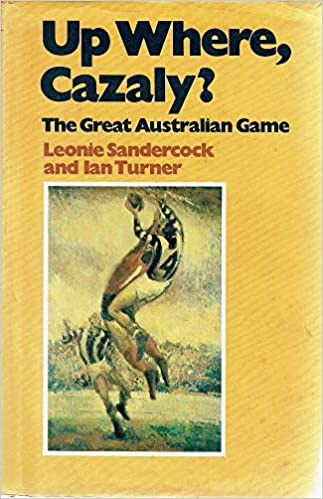

We're constantly in team meetings here in the underground bunker at Club Troppo working out how to tweak the linkbait. An edict has already been passed down the line from the AI that runs the place that no posts will be published on anything but Coronavirus for the next six months (when our JobKeeper payments stop and we'll all be released for the AFL Grand Final between Collingwood and the Joint Commonwealth Government Treasury/Health Department Coronavirus team (which will also be due for a run round the block.)So how to keep the readers entertained and clicking on the links,
Thus an old friend of mine from Melbourne Law School and member of the Melbourne Cricket Club wrote me this email.
You’re an economist. The Age this morning showed a chart comparing economic downturns. It showed that the Spanish flu only caused a contraction of about 1% in 1918/19 but we are projecting double digit contractions from this pandemic. It seems the Spanish flu in medical terms was at least as serious as Covid-19 and provoked severe restrictions on movement so why the difference in economic effects? I’m just curious.
I worked things out on the fly as follows:
Very interesting question. I don’t know the answer.
My guess is that there would have been much less locking down, but who knows. Perhaps they just had fewer people getting SC kinds of fees ;)
(Actually I think that’s quite a good idea for a hypothesis. I’d imagine the proportion of the workforce considered to be in ‘essential services’ was much higher. I mean what jobs were being done in 1919 that things could keep ticking over without?
Not banking, not accounting. Servants, governesses could keep doing their jobs in situ. All automatic systems they ran, required people to run them – in technical areas they were called ‘calculators’ – and they were people, usually women with pencil and paper (you’ve no doubt seen the movie ;)
There wasn’t much tourism – or, judging from my childhood forty years later, even eating out.
I’m struggling to get much past travelling salesmen and pubs. And the VFL GF was held, so who knows if the season was disrupted?
I’ve just checked – the footy went on as normal – so not a lot of lockdown going on – first things first
Collingwood ended up on top of the ladder, Melbourne the bottom.
Those were the days!
Anyway, in replying I did happen upon the net and this article by Frank Bongiorno, whom I then wrote to asking him to elaborate. To which he replied:
This is a good question about why the VFL continued. I took Ian Turner and Leonie Sandercock’s Up Where, Cazaly? The Great Australian Game (1981) off the shelf and despite its several pages on the 1919 season, there’s not a word on the flu. The discussion instead deals with matters such as the growing violence of the game and concerns about this trend. Even more bizarre is The Carlton Story (1958), which actually records the death of Frank Hyett (a club official and, of course, a socialist and union leader). But it doesn’t say what he died of – we know from elsewhere including his ADB entry it was the Spanish Influenza. I’ve just done a very quick and dirty search of Trove, and that’s little better – but might be worth looking at in a more focussed way than I’ve just done. There are references to players having influenza, but no suggestions I saw that the season be suspended or postponed. Perhaps there’s discussion there – or in newspaper sources not covered by Trove – that could be tracked down. But the flavour of the casual attitude is covered by statements of this kind, about the Sale team: ‘The local team has now got over its influenza epidemic, and the players are once again ready for the fray’. Gippsland Times, 31 July 1919, p. 3. Michael McKernan recently published in the Canberra Times on the disruptions caused by the war itself – the move to just four teams for some of the war years. It might be that there was little taste for further disruption by 1919, as the issue of whether or not to continue during the war had been divisive for the VFL (The VFA did discontinue). Certainly, the overall situation seems to have been that organisations were free to decide how they would respond, so there was nothing to stop the VFL from continuing. Clubs were rebuilding after the war; The Carlton Story tells me Carlton was in bad financial straits but came out of the 1919 season in much better shape with huge crowds and receipts as well as a larger membership.
how much did you have to drink when you posted this? Hilarious. We certainly need some humour at times like this.
The alcohol came later – with dinner. This was my pre-dinner post!
yeah no lockdown no great slowdown always the 20s were anything but roaring
I suppose people write down mostly what is remarkable. Perhaps disease outbreaks of all stripes were a more commonplace fact of life in early 20C Australia and folks just mostly carried on regardless. Wasn't sure how to ascertain this but after a bit of poking around I came across a chart on slide 12 of the following link, showing the history of polio outbreaks from 1917 onwards. Seems to indicate something like this, if it is indicative.
https://www.poliohealth.org.au/?download=4580
Was "COVID genocide now" just a touch harsh on Paul?
Maybe I'm missing a joke or something; it wouldn't be the first time.
Thanks – I know an economist who would have got polio around the time of the 1937 spike!
He loves it that way
Besides, it's all grist for the mill for his bid to be the next Bond villain.
A shaved head doesn't cut it any more – there has to be more on the menu than that.
thanks for standing up for me, David, appreciated. But I wasn't offended by Nick's joke. He knows I am trying to prevent millions of deaths, and he is in a way making a joke of others who misuse the word safety.
As suspected, I was missing a joke.
Nick, you should know that making an economist the evil globe-circling villain would be too cliched even for the Bond movies' producers.
In case anyone's interested, Troppo commissioned this research way before the most recent breakout. And remember, pretend is never good enough … except here at Troppo.
"Nonpharmaceutical Interventions Implemented by US Cities During the 1918-1919 Influenza Pandemic"
Can I just add the flu did not originate in Spain. It was called that for political reasons over not going to war in WW1